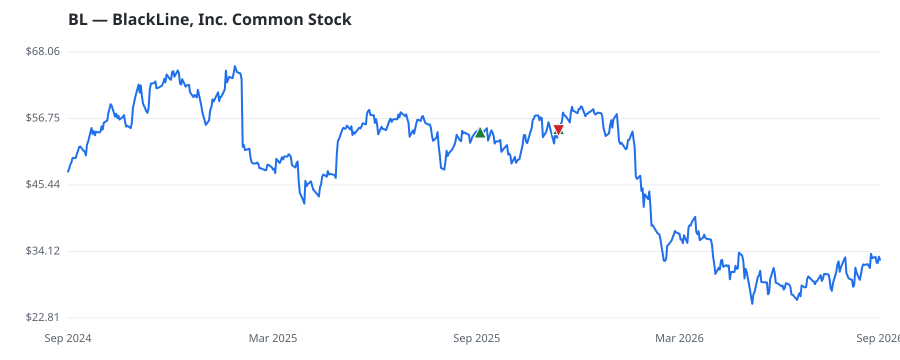

bullish · bearish · n/a — dots: price>SMA10 · SMA10>SMA50 · SMA50>SMA200 · up>down volume (20d)
Software & Services · small cap
Members who bought BL earned a dollar-weighted -19.7% from their disclosure dates, versus +8.6% for the S&P 500 over the same holding windows (-28.3% alpha).

▲ green = a disclosed purchase · ▼ red = a disclosed sale (plotted on disclosure date)
BlackLine Inc is engaged in providing financial accounting close solutions delivered as Software as a Service (SaaS). The Company's solutions enable its customers to address various aspects of their critical processes, including financial close & consolidation, intercompany accounting, and invoice-to-cash. The majority of the revenue of the company is earned in the United States. SERVICES-PREPACKAGED SOFTWARE · website
| Revenue | $700.4M | Net income | $27.3M |
|---|---|---|---|
| Operating income | $25.6M | Diluted EPS | $0.39 |
| Assets | $1.8B | Equity | $332.3M |
| Member | Chamber | Out-performer | Disclosed buys $ | Return on buys |
|---|---|---|---|---|
| Lisa McClain | house | — | $16K | -19.7% |
Disclosed $ figures are bracket midpoints — filings report ranges (e.g. $1,001–$15,000), not exact amounts.